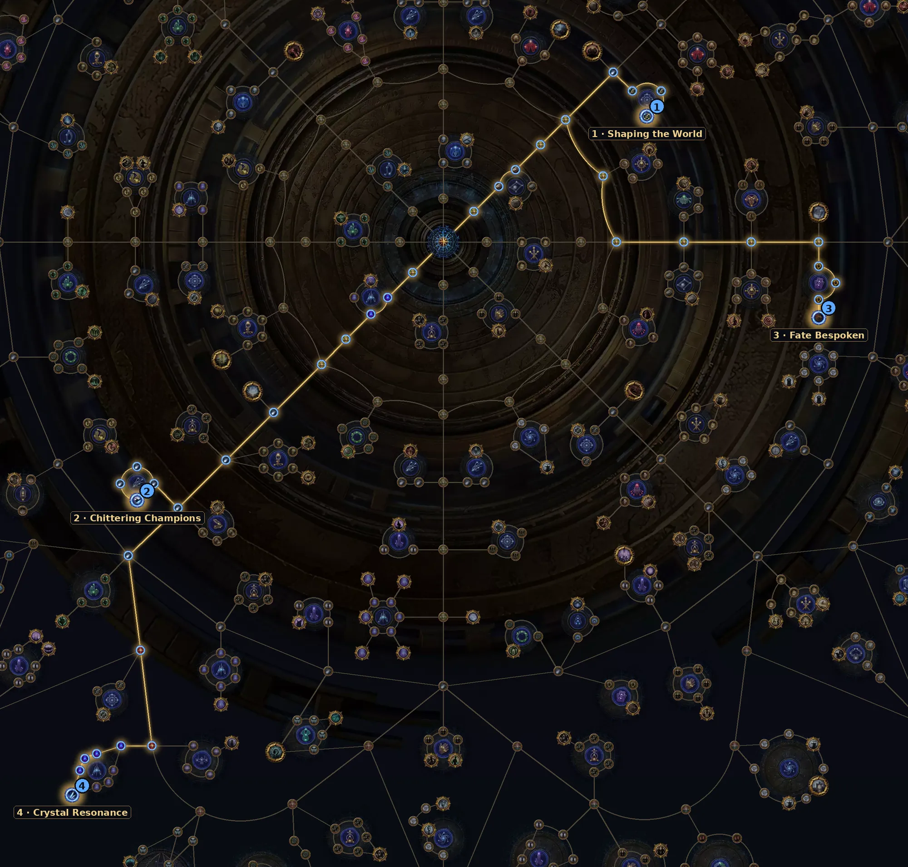

A mecânica da liga. As Covens dão Fates que deixam o boss do mapa mais forte e mais rico. Bosses com Fate soltam Viscera, buffs permanentes para o seu personagem.
| Item | Como usar |
|---|---|
| Começo | 1–2 Fates por boss enquanto a build é fraca. |
| Meio | 3 Fates em bosses que você mata rápido. Procure combos de Fates iguais. |
| Viscera | Viscera vêm em 3 tiers; o mais alto só no endgame. Priorize os slots que reforçam seus itens principais. |
| Grim Fates | Guarde para os pinnacles quando a build aguentar. |
Árvore oficial da 3.30 (a GGG publicou antes da liga). Caminho a partir do centro: 30 pontos para os essenciais e +8 para os extras. A árvore tem 150 pontos no total. Some com a base de sustento (36 pontos).
| Nó | O que faz |
|---|---|
| 1 Shaping the World Essencial | Boss final com 5% de chance de soltar mapa 1 tier acima; 10% de chance de mapas subirem de tier. |
| 2 Chittering Champions Essencial | Boss final com 25% de chance de soltar uma Thread extra. |
| 3 Fate Bespoken Essencial | Cartas que caem no mapa vão para o boss final, que pode duplicá-las. |
| 4 Crystal Resonance Extra | O boss final ganha mods das essências e pode soltar Calcified Map no T16. |
Abrir no site oficial (árvore do Atlas)
Nós de escolha (Thread, exército, líder etc.) aparecem marcados no link; escolha a opção indicada na tabela ao clicar neles.

Precisa de dano de boss alto e defesa sólida: cada Fate deixa o boss bem mais perigoso.
Do site: Earthshatter Berserker, Storm Burst Hierophant, Ballista Hierophant.
Ver vídeos da 3.30 no YouTube
Busca pronta pela 3.30. A árvore do Atlas saiu antes da liga; os vídeos de farm da 3.30 começam a aparecer a partir do lançamento (13/11).